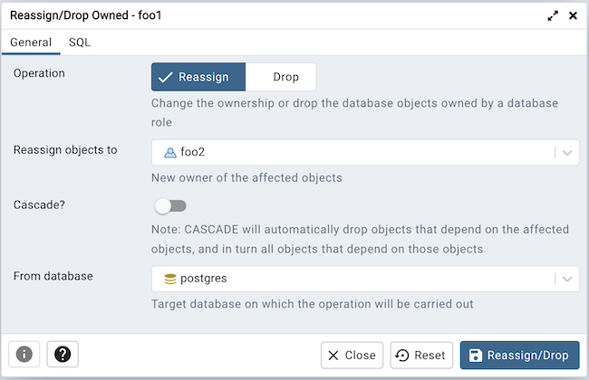
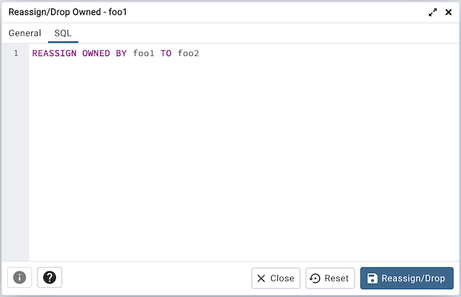
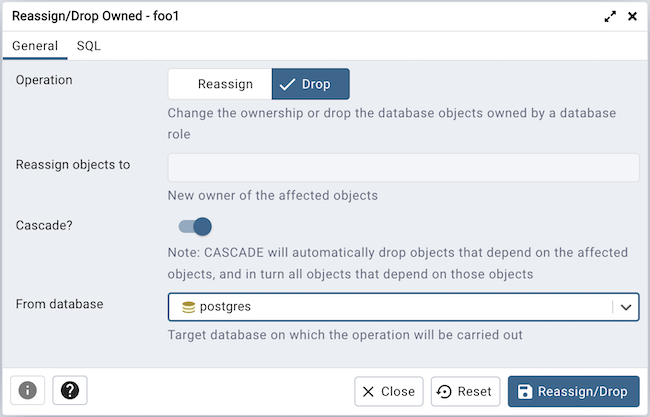
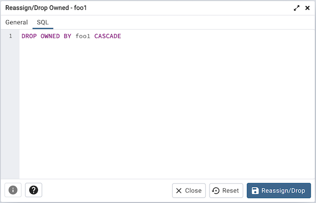

Role Reassign/Drop Own Dialog¶
Use the Reassign/Drop Own dialog to change the ownership of database objects owned by a database role. This dialog instructs the system to change the ownership of database objects owned by any of the old_roles to new_role.
The Reassign/Drop Own dialog organizes the Reassign & Drop role through General tab.
Use the Operation field to provide Reassign option.
Provide a new role in the Reassign Objects to field; The ownership of all the objects within the selected database, and of all shared objects (databases, tablespaces), owned by the old_role will be reassigned to new_role.
Provide a database on which the reassignment is to be carried out.
The above example demonstrates reassigning old_role to new_role.
Click the SQL tab to continue.
Removing database objects owned by a database role.
Use the Operation field to provide Drop option.
Use the Cascade? field to provide Yes, No is default.
Provide a database on which the drop of objects is to be carried out.
Click the SQL tab to continue.
The above examples demonstrates drop owned by role.
Click the Help button (?) to access online help.
Click the OK button to save work.
Click the Cancel button to exit without saving work.